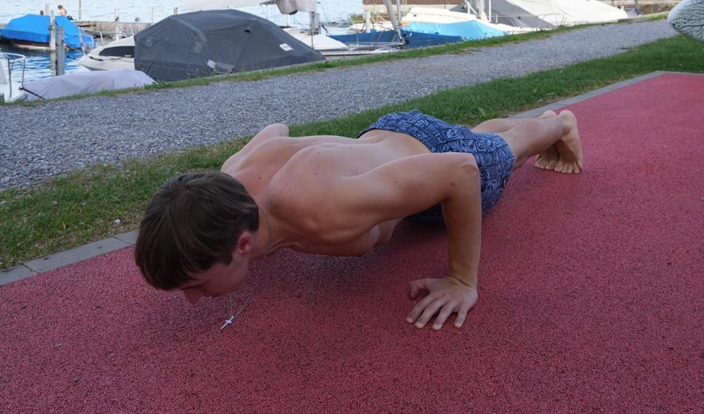

Übungen & Kraftaufbau
Die 5 wichtigsten Basics für Calisthenics-Anfänger
Egal ob du den Muscle-Up oder die Human Flag lernen willst: Ohne die richtigen Grundlagen wird es schwierig. Ich zeige dir die 5 Übungen, die jeder beherrschen sollte.